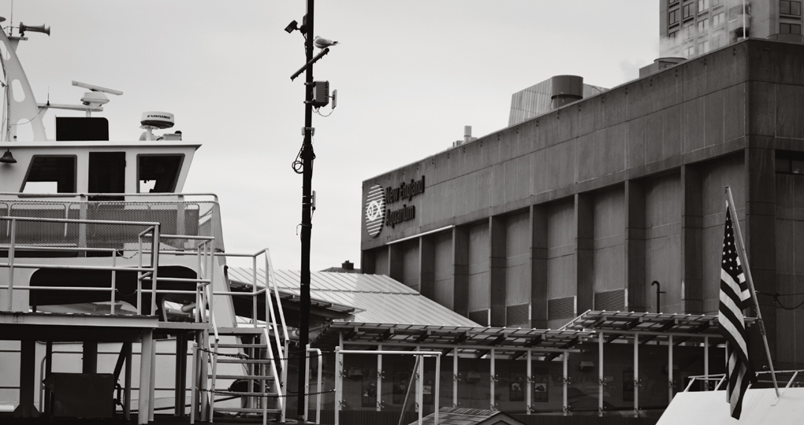
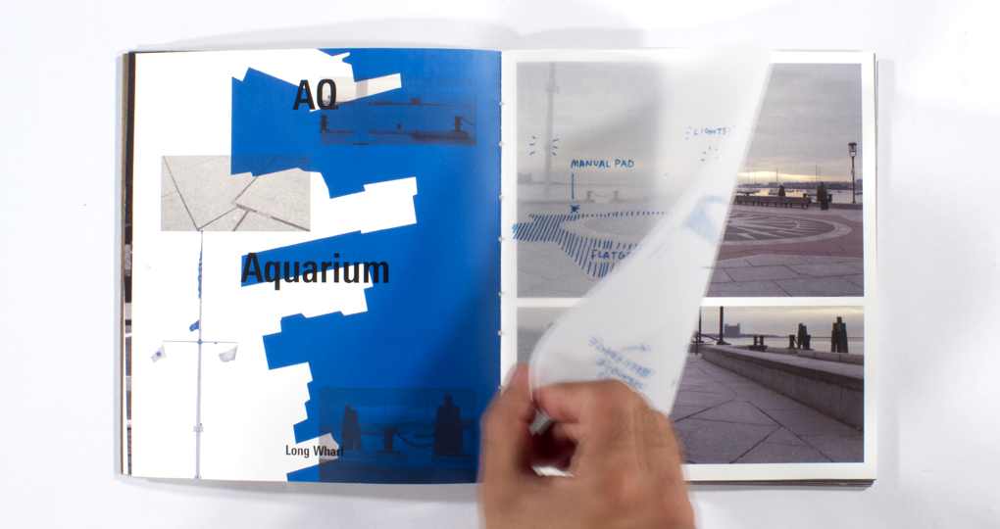
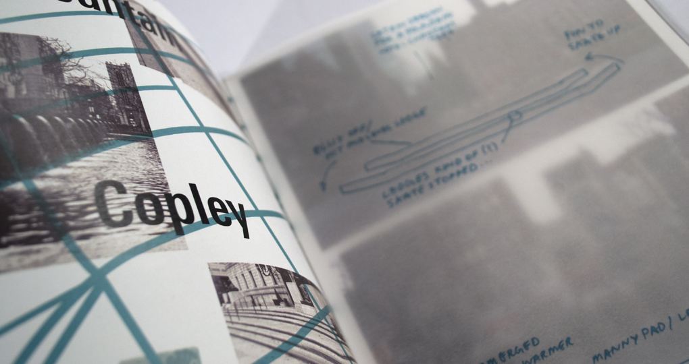
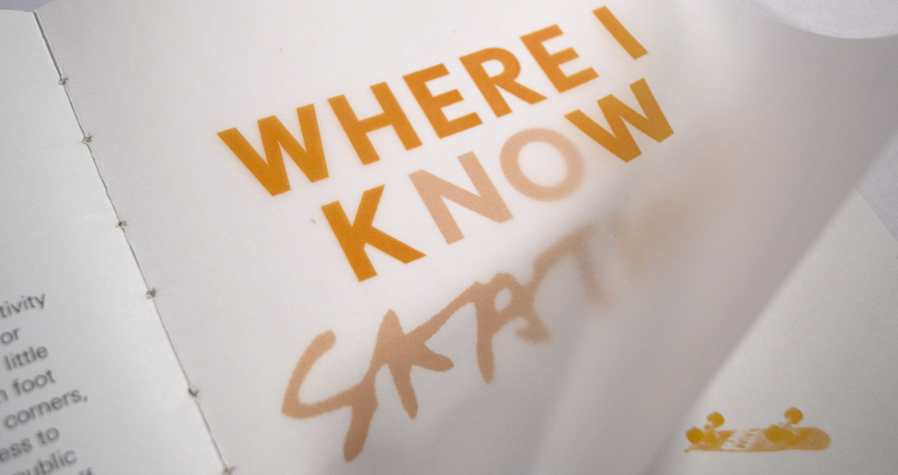

Where I Know Skating
A tribute to a limitless source of creativity and inspiration in the city of Boston.
This handbound photographic account of the city illustrates the concept of skate spots to those who are not familiar.
  I mention aspects of locations that matter to skateboarders by overlaying comments on shots of the cityscape.
R'Ode to Street Skating
Skateboarding has always stood as a limitless source of creativity and inspiration. If you had asked me ten years ago whether or not I would still be skating today, the answer would require little thought. From humble beginnings on my eight by fourteen foot backyard patio, I've graduated my way through the street corners, curbs, and basketball courts of my neighborhood. Needless to say, not everyone is as accepting of skateboarders using public property to their advantage. What once meant being shooed off property translates to confiscation and fines over the years.
So you start to wonder where exactly it is "acceptable" to skate. "When is that new skatepark gonna be built? You know, the one that's supposed to go in next to the Charles," said just about everyone who ever kicked you out of a spot. Truth is, no one really knows when the Charles River Skatepark is going to break ground with construction. Mind you, this is a project that had been announced over eight years ago by the Charles River Conservacy. But a skatepark is one thing, a fun place to be at with a group of friends, not the be-all end-all destination. What really bothers me is that people will often times look at skateparks and believe that this is where all skateboarders belong. While it may be an idealistic setting, this is simply not true. It's not called "street" skating for nothing. Skateparks offer an idealized simulation of the environments from which the activity has grown. Now this is a great opportunity, don't take this the wrong way. Younger kids have a place to hone their skills and learn in a habitat where those of all ages will flock. If a park were to pop up in the next few days, you could certainly expect to see me there. But the beautiful thing about street skateboarding is that it has no boundaries. The only boundaries which exist are those imposed by an authoritative figure, ie. security guards or the cops. Of course there are those pseudo-authority figures, the everyday vigilante citizens who think that they can kick you out of a spot over which they hold no real domain. "This isn't a playground," says the guy with a fanny pack. It is a different mindset. We look at the landscape available to us and utilize its intricacies for our own benefit. We'll do the best we can to make certain features work if not immediately accessible. Who else will take time from their day to fill cracks and gaps in sidewalks with autobody filler? We are truly a devoted breed. A real sense of community arises from the people that you see in the streets on a day to day basis. I've always appreciated the fact that I could leave my door, not call up anyone, and run into a crew of friends I know by the end of the night. Skateshops foster this sense of community. A meet up spot, a place to grab spare hardware for a quick fix, and if you're loyal, the primary source and possibly sole provider of skate goods. Having a local skateshop wasn't something that I had until later in my highschool years, but it didn't make my gratitude towards its establishment any less. I owe much of my skate knowledge and experience to the dudes at RAW. The shop provided a place to mark the beginning of a session, signal the end of a session, and overall good times. Regardless of the environment, there's too much fun to experience while you spend time on a skateboard.